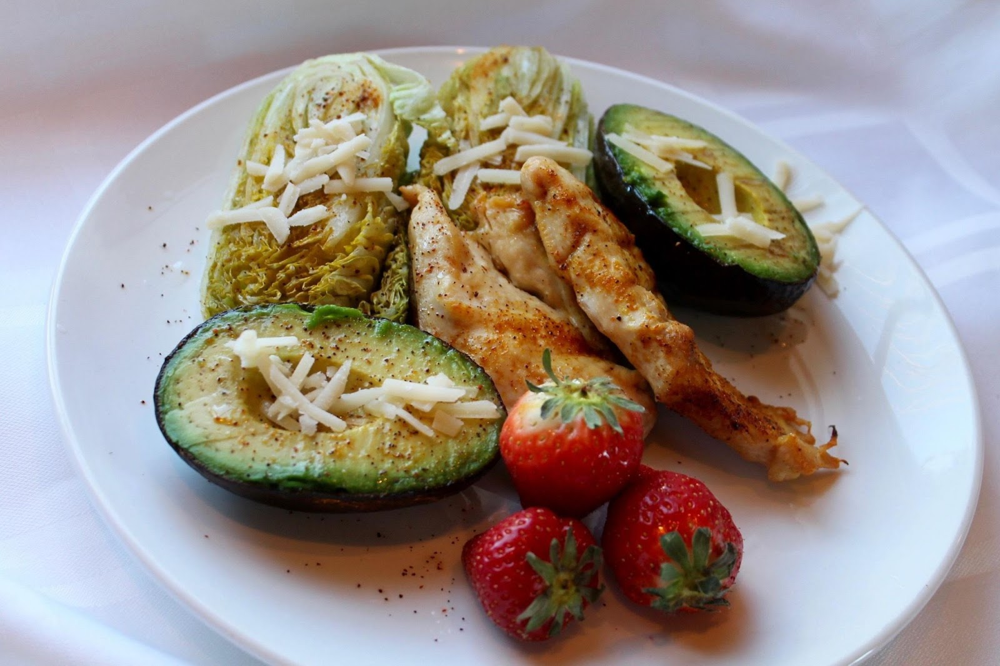

Akkor történt, amikor hazaértünk a kávézóból egy vacsora után. A férjem egész este csendes és hidegen udvarias volt. Tudtam, hogy valami nincs rendben, de nem tudtam, mi. Bementünk a hálószobába, és elkezdtem vetkőzni, éppen vettem át az otthoni ruhámat, ő pedig megdermedt a szoba küszöbén, és csak annyit mondott:
- Isten lássa lelkemet, én próbáltam, próbálkoztam. Nem tudom tovább csinálni ezt.
Kivette a bőröndjét a szekrényből, és csomagolni kezdett anélkül, hogy megmagyarázta volna a szavait. Olyan volt, mint egy átverés, mint valami nevetséges komédia. Emlékszem, hogy megpróbáltam megállítani, ostoba kérdéseket tettem fel neki, győzködtem. Ő viszont hallgatott, csak a tegnap általam kimosott zoknikat és pólókat számolta.
A folyosón sétált ki és húzta a kabátját a földön, amikor ismét megszólalt:
- Mégis mit tehetek, ha te ilyen kövér vagy!? A házasságunk előtt vékony voltám, a karjaimban vittelek. Most meg... ez undorító. Nem bírom tovább.
És elment. Később megtudtam, hogy van valakije. De mindez már nem fontos. A lényeg az, hogy ezzel kezdődött a fogyásom.
Helyes táplálkozás
Nem számít, milyen ostoba volt az én (már ex-) férjem, igaza volt. A házasság előtt 34 kilogrammal kevesebbet nyomtam, majd elkezdtem főzni és későn vacsoráztam, teherbe este, szültem, folyton kialvatlan voltam. Persze, hogy kevésbé figyeltem magamra.
A sérelmek viszont erőt adtak, hogy cselekedjek. Úgy döntöttem, hogy megváltoztatom az étkezési szokásaimat, és elkezdek helyesen étkezni. Másnap reggel, mindent kiszedtem a hűtőből: az üdítőktől kezdve teljesen a fagylaltig. Majd kidobtam.

De csak 2 hétig bírtam. Abban az időben a lányom nyár vége előtt meglátogatta a nagymamáját, így egyedül maradtam. Ez azt jelentette, hogy a motivációm csak rajtam állt. Frusztrált voltam.
Előszöris hiányzott a megfelelő tudás a fogyáshoz. Még sosem számoltam a kalóriákat. Ezért úgy döntöttem, hogy elkezdem tanulmányozni a kérdést. És kiderült, hogy nehezebb, mint gondoltam: minden táplálkozási szakembernek megvannak a saját szabályai és előírásai, a saját elképzelései a megfelelő táplálkozásról. Tudományos anyagok találtam persze, egy csomó cikket a múlt századból és a speciális diétákról cukorbetegeknek, epilepsziásoknak, stb.
Másodszor pedig hamar rájöttem arra is, hogy az egészséges életmód egyfajta kultusszá vált. A marketingesek és az edzők egzotikus gabonafélékkel táplálkoznak, azokat ajánlják, diétás bárokkal hoznak létre, ahol az italok kétszer olyan drágák, mint az analóg termékek. És a vicces az egészben az, hogy ezek a termékek tele vannak káros adalékanyagokkal.
Ennek eredményeként, amikor a fejem már dagadt az információtól, úgy döntöttem, hogy egy egyszerű rendszert fogok követni:
- kizárom az édességeket, a keményítőtartalmú ételeket és a sült ételeket;
- előnyben részesítem a zöldségeket;
- naponta 4-5 alkalommal fogok enni;
- sok vizet iszom.
Egy ideig működött. Egy hét alatt 3 kilótól szabadultam meg. Az első napokban a gyomrom olyan hangosan korgott, hogy kényelmetlenül éreztem magam a kollégáim előtt. Amikor a hangok megszűntek, azt hittem, hogy ez jó jel.
De hamarosan a súlyom csak nőni kezdett. Már hallottam, hogy be szokott állni egy ilyen stagnáló időszak, de általában nem ilyen hamar, csak 10-15 kg után. A helyes étkezés csak lehetővé tette számomra, hogy megszabaduljak a felesleges víztől. Nekem ez nem volt elég.
Edzőterem
További intézkedésekre volt szükségem. Tehát elmentem egy fitneszközpontba. A pénzügyi helyzetem lehetővé tette számomra, hogy vegyek bérletet 2 hónapra, többre nem futotta, mert a lányomat is el kellett tartanom. Azonnal közöltem az edzővel, hogy ez idő alatt szeretnék látványos eredményeket. Ekkor rám nézett, és csak szárazon annyit mondott, hogy ez aligha lehetséges.
Azért én úgy döntöttem, hogy mégis megpróbálom. Hetente háromszor munka után elmentem az edzőterembe és edzettem. Eleinte a személyi edzőm javított a hibáimat, megmutatta nekem, mit hogy kell jól csinálni, majd időről időre egyedül hagyott. Aztán az edzéseket már más szemszögből kezdtem látni.
Az edzőterembe bizonyos típusú emberek járnak. A következőképpen lehet őket csoportosítani:
1) Feneküket rázó lányok.
2) Srácok, akik úgy néznek ki, mint a fiatal Schwarzenegger.
3) Vegán rajongók, egészséges életmód fanatikusai stb.
Nem bántom ezeket a csoportokat, félre ne értsetek. De nyilvánvalóan nem igazán tetszettem nekik. Folyamatosan gúnyos pillantásokat kaptam, és leereszkedő hangon beszéltek velem. Undorító volt az egész.
Még mindig nem értem, hogyan lehet így viselkedni. Hiszen azért mentem oda, hogy egészségessé és gyönyörűvé váljak. Három hétig küzdöttem a fáradtsággal és a lustasággal, folyton izzadtam és hallgattam az edzőre.
De őszintén szólva, miután a férjem elment, az önbecsülésem a padlóra került, és egyszerűen nem bírtam elviselni ezt a fajta hozzáállást. Végül teljesen elkezdtem gyűlölni az alakomat. Úgy döntöttem, hogy drasztikus intézkedésekhez folyamodom.
Keto-diéta
Röviden: az egész ötlet azon alapul, hogy a testnek a ketózis állapotába kell kerülni, vagyis egy olyan állapotba, amikor a testben nincs szénhidrát és ezért elkezdi lebontani a zsírokat, hogy energiához jusson. Az édességeket és a keményítőtartalmú ételeket továbbra is tiltó listán voltak, de legalább éhségérzés nélkül.
Nagyon különböző dolgokat hallottam a ketogén étrendről. Nagyon sok anyag van róla. Míg egyesek dicsérik a hatékonyságát, mások károsnak vagy akár veszélyesnek is tartják. De hajlandó voltam vállalni a kockázatot. Őszintén szólva, már elkezdtem gondolkodni a zsírleszíváson is, hogy ne kelljen ezekkel az étrendekkel foglalkoznom. A
gyomor nem értékelte ezt az étrendváltozást, egyre gyakrabban fájt. Eleinte nem tulajdonítottam nagy jelentőséget ennek: a ketózisba való belépést általában meglehetősen kellemetlen tünetek kísérik. Ezek közé tartozik a láz, a gyengeség, a rossz lehelet stb. Én már átéltem az összes tünetet. Lázas voltam, alig tudtam felkelni az ágyból reggel, és hányingerem is volt.
És a legrosszabb
Ami az ötödik napon történt. A buszon voltam, mentem dolgozni, fülledt volt, és már nagyon kellett pisilnem, de nagyon szomjas is voltam. Az utolsó dolog, amire emlékszem, az az volt, amikor a világ az oldalára esett, és minden elsötétült előttem. A kórházban ébredtem.
A véremet és a vizeletemet tesztelték. Aztán egy nővér segített eljutni az ultrahangra. Minden olyan ködös volt, csak feküdtem egy hordágyon, félig elfelejtve, vártam, hogy valaki végre elmondja, mi folyik itt.
Estére az orvos bejött hozzám, meglehetősen bájos volt, bár egy szigorú nő volt azért. Azt hiszem, az én korosztályom volt. Azt állította, hogy az étrendemben beállt változások a vesémet is érintik (ennyit a keto diétáról).
Beszélgetni kezdtünk, és elmondtam neki, hogyan próbálok lefogyni. Az endokrinológus figyelmesen végighallgatott, szimpatizált velem. Nem én voltam az első betege, aki szabad akaratából ebbe az állapotba került. Nem ítéltek el engem a korábbi szépségem helyreállítására tett kínos kísérleteim miatt, csak egy másik módszert ajánlottak: az nevű terméket .
Megosztom veletek, amit az elmondásukból megértettem. Ez a készítmény TELJESEN természetes összetevőkből készült. Mivel nincs káros anyag benne, nem károsítja a májat vagy a vesét. Teljes összetétele oly módon készült, hogy egyszerűen feltárja a legfontosabb összetevő, az almaecet tulajdonságait. Az
egyszerre több szinten hat:
- felgyorsítja az anyagcserét és a lipid anyagcserét, hogy a test folyamatai felgyorsuljanak;
- stabilizálja a glukagon termelését, amely a zsírok lebontásáért felelős hormon;
-csökkenti az inzulinrezisztenciát, hogy hatékonyan a sejtek táplálására fordítsák a sejtek a bevitt kalóriát, hogy ne tárolják azokat;
- csökkenti az étvágyat, így kevesebbet eszik az ember;
- fenntartja a test feszességét.
Ez vitaminok és ásványi anyagok komplexe, és ez lehetővé teszi, hogy lefogyjon anélkül, hogy károsítaná az egészségét. Sőt, fájdalmas edzések és diéták nélkül. Természetesen még alig engedtek ki a kórházból, de úgy döntöttem, hogy kipróbálom az ajánlott készítményt.
Az fokozatosan hat, nem drasztikusan. A legtöbb fogyókúrás termék, amelyeket ismerek, hashajtó és vizelethajtó hatásúak. Kellemesen meglepődtem, amikor rájöttem, hogy... egyszerűen észre sem veszem, ahogy fogyok. Nem éreztem éhséget, sem kellemetlen érzést, édességet sem kívánok. Mivel az mal nem kellett korlátoznom magam.
Ebben a kényelmes ütemben észrevétlenül 7 kg-ot leadtam egy hét alatt. Egy nap azt vettem észre, hogy a farmer leesik rólam. Ruhában kellett mennem dolgozni.
Az eredményeim:
| 1. hét | - 7 kg |
| 2. hét | -12 kg |
| 3. hét | - 17 kg |
| 4. hét | - 21 kg |
Arra is rájöttem, hogy ez nagy megtakarítás is. Végül sok pénzt megspóroltam a diétás termékeken, az edzőtermi bérleten, a karcsúsító fehérneműkön. Mivel kevesebbet is eszem, most több pénzem megmarad. Ezt a megspórolt pénzt egy új ruhásszekrényre költöttem.
Összességében, a történetem jól végződött. Eleinte szívszorító volt, most viszont teljesen elégedett vagyok azzal, ahová jutottam: most már egészséges az önértékelésem. Visszanyertem az egykori formámat, és ez nagyszerű érzés. És szeretném, ha ezt mások is átélhetnék.
Megosztom veletek az hivatalos oldalára mutató linket , ott közvetlenül a gyártótól megvásárolható. Így kevésbé valószínű, hogy hamisítványba ütköztök, és első osztályú a szolgáltatásuk is. A megrendelés napján visszahívják a megrendelőt, pontosítják a kiszállítás adatait, és mindössze 3 nap és kihozzák. Mindent összevetve, elégedettek lesztek.
Most 50% kedvezménnyel vásárolhatja meg az ot. De siessen, a promóció 2022.09.26-tal véget ér.
Sok szerencsét kívánok nektek! Mindenkinek azt kívánom, hogy szeresse magát! Én is megcsináltam, nektek is menni fog!

Nagyon köszönöm Önnek! Már megrendeltem, egy ilyen kedvezményt nem szabad kihagyni.
Hallottam róla a nővéremtől, aki szintén orvos. Megerősítette, hogy az nak valóban nincs mellékhatása.
A csomagot egy héten belül kiszállítják. Szerintem kényelmes, hogy átvételkor lehet fizetni.
Fogyókúra nélküli fogyás: igazi valóra vált álom. Én is megrendelem!
Igen, a fogyás sok lány számára fájdalmas téma. Együttérzek a szerzővel.
Tényleg segít. Sokáig próbáltam lefogyni, néha még éhezni is kész voltam ennek érdekében. Ennek eredményeként gyomorfekélyem lett, a kilogrammok pedig néhány hónap múlva visszajöttek.
Ez egy igazán kitűnő szer! Már 5 napja használom, és minden reggel mérlegelem magam. Működik!
Azt is hallottam, hogy egyesek pszichéje teljesen tönkremegy a fogyókúrázás miatt. Nem szabad idáig eljutni.
Több csomaggal is rendeltem egyszerre, hogy később ne kelljen megint vásárolni.
A keto nagyon veszélyes és természetellenes állapot. Az emberek nem véletlenül mindenevők, nem szabad ilyen diétákat csinálni!